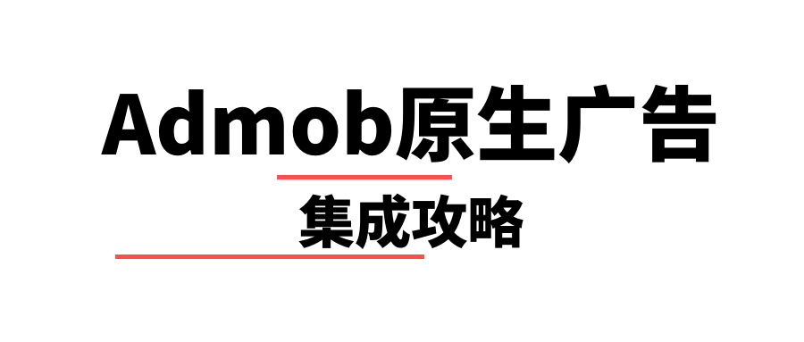
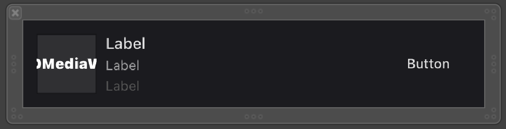

Admob广告分为banner、插屏、激励和原生，其中原生广告的集成过程是最复杂的，并且完全按照官方文档或者官方的示例程序是无法成功的，所以有必要把我的集成方法分享给大家。
到公众号【iOS开发栈】学习更多SwiftUI、iOS开发相关内容。

以下内容基于
Google-Mobile-Ads-SDK的8.9.0版本。如果不适用于你的版本可以联系我，一块讨论解决。
Admob原生广告
原生广告是一种可以自定义广告样式的广告形式，通过集成原生广告可以根据自己App的已有UI来选择广告的样式，使广告能够跟App尽量融合在一起，减少割裂感，进而减少广告对用户的打扰。这种自定义外观的功能是其他形式的广告所不具备的。
想要集成原生广告总体来说需要进行两步操作：一是自定义广告的界面，二是通过SDK获取广告的数据。
获取原生广告数据
let nativeAdOptions = GADNativeAdViewAdOptions()
nativeAdOptions.preferredAdChoicesPosition = .bottomLeftCorner;
let adLoader = GADAdLoader(adUnitID: "ca-app-pub-3940256099942544/3986624511", rootViewController: self, adTypes: [.native],
options: [nativeAdOptions])
adLoader.delegate = self
adLoader.load(GADRequest())
原生广告加载回调
GADAdLoader对象的delegate需要遵守GADNativeAdLoaderDelegate代理，这个代理遵守了GADAdLoaderDelegate代理，因此这两个代理中的回调都可以用。其中：
GADAdLoaderDelegate代理中的adLoader:didReceiveNativeAd:表示原生广告加载完成。
GADAdLoaderDelegate中的adLoader:didFailToReceiveAdWithError:表示广告加载失败。
在Admob的文档中提到尽量不要在加载失败的回调中重试，不过我认为这里指的是不要立即重试，在实际开发过程中可以根据业务需求采取间隔一定时间后重试。
在成功的回调中需要把界面和获取到的数据进行绑定，下面有详细的步骤。
自定义原生广告样式
根据Admob文档的描述，可以通过xib的形式来自定义原生广告样式。可以通过查看GADNativeAdView类确定原生广告支持的组件类型和个数，里面大多数都是用的UIView不过在实际过程中需要区分UILabel/UIImageView或者UIButton。
| 实际类型 | 字段名 |
|---|---|
| UILabel | headlineView bodyView storeView priceView advertiserView |
| UIButton | callToActionView |
| UIImageView | iconView imageView starRatingView |
| GADMediaView | mediaView |
根据UI需求完成xib的布局：

并把这个xib文件命名为：AdmobNative.xib。
截止到这里你会发现我们并没有创建类文件，那是因为Admob的SDK里已经有这样的类文件了，我们需要做的就是把这个xib文件和已经存在的类文件关联起来，也就是“连上线”。
xib文件关联类
如果按照官方文档的描述，可以直接把刚刚创建的xib文件和Admob库里面GADNativeAd.h文件中的GADNativeAdView类进行关联，而这个类中属性也都是IBOutlet的，但是当你这么做的时候发现并不能连上线，无法进行关联。
之所以出现这种情况是因为官方文档过时了，Google-Mobile-Ads-SDK库在之前是framework的形式，而现在改成了xcframework。
所以要想进行连线就得另辟蹊径了。
我们都知道，OC的.h和.m文件类似C语言的.h和.m，具体来说就是.h文件只是接口声明，它的作用就是让编译器不报错，而在实际运行时还是要看.m文件中是否确实有该方法或者变量。
作为仅有声明作用的.h文件，我们是可以随便创建的，只要声明的内容在.m文件里有实现就可以了。那么我们就可以把Google-Mobile-Ads-SDK中GADNativeAd.h文件拷贝一份到自己的项目里。
把GADNativeAd.h文件原封不动的拷贝到自己的项目中后，就可以随心所欲的进行连线了。
把xib中的界面和类文件里的属性关联以后，就可以把请求到的广告内容显示到界面上了。
显示获取到的广告数据
// Mark: - GADNativeAdLoaderDelegate
func adLoader(_ adLoader: GADAdLoader, didReceive nativeAd: GADNativeAd) {
print("Received native ad: (nativeAd)")
refreshAdButton.isEnabled = true
// Create and place ad in view hierarchy.
let nibView = Bundle.main.loadNibNamed("NativeAdView", owner: nil, options: nil)?.first
guard let nativeAdView = nibView as? GADNativeAdView else {
return
}
setAdView(nativeAdView)
// Set ourselves as the native ad delegate to be notified of native ad events.
nativeAd.delegate = self
// Populate the native ad view with the native ad assets.
// The headline and mediaContent are guaranteed to be present in every native ad.
(nativeAdView.headlineView as? UILabel)?.text = nativeAd.headline
nativeAdView.mediaView?.mediaContent = nativeAd.mediaContent
// This app uses a fixed width for the GADMediaView and changes its height to match the aspect
// ratio of the media it displays.
if let mediaView = nativeAdView.mediaView, nativeAd.mediaContent.aspectRatio > 0 {
let heightConstraint = NSLayoutConstraint(
item: mediaView,
attribute: .height,
relatedBy: .equal,
toItem: mediaView,
attribute: .width,
multiplier: CGFloat(1 / nativeAd.mediaContent.aspectRatio),
constant: 0)
heightConstraint.isActive = true
}
// These assets are not guaranteed to be present. Check that they are before
// showing or hiding them.
(nativeAdView.bodyView as? UILabel)?.text = nativeAd.body
nativeAdView.bodyView?.isHidden = nativeAd.body == nil
(nativeAdView.callToActionView as? UIButton)?.setTitle(nativeAd.callToAction, for: .normal)
nativeAdView.callToActionView?.isHidden = nativeAd.callToAction == nil
(nativeAdView.iconView as? UIImageView)?.image = nativeAd.icon?.image
nativeAdView.iconView?.isHidden = nativeAd.icon == nil
(nativeAdView.starRatingView as? UIImageView)?.image = imageOfStars(
fromStarRating: nativeAd.starRating)
nativeAdView.starRatingView?.isHidden = nativeAd.starRating == nil
(nativeAdView.storeView as? UILabel)?.text = nativeAd.store
nativeAdView.storeView?.isHidden = nativeAd.store == nil
(nativeAdView.priceView as? UILabel)?.text = nativeAd.price
nativeAdView.priceView?.isHidden = nativeAd.price == nil
(nativeAdView.advertiserView as? UILabel)?.text = nativeAd.advertiser
nativeAdView.advertiserView?.isHidden = nativeAd.advertiser == nil
// In order for the SDK to process touch events properly, user interaction should be disabled.
nativeAdView.callToActionView?.isUserInteractionEnabled = false
// Associate the native ad view with the native ad object. This is
// required to make the ad clickable.
// Note: this should always be done after populating the ad views.
nativeAdView.nativeAd = nativeAd
}
其中有两点需要注意：一是通过设置nativeAdView.callToActionView?.isUserInteractionEnabled = false来使用户可以通过点击按钮跳转到App Store或者广告主的网站，二是nativeAdView.nativeAd = nativeAd来把数据和界面进行关联，只有这样广告的元素才会响应用户点击执行跳转。
广告视图事件处理
上面的nativeAd.delegate = self可以让当前类获取到广告视图的事件回调，比如点击、跳转、展示等，具体可以查看GADNativeAdDelegate。其中有一点需要注意的是nativeAdDidRecordImpression:和nativeAdDidRecordClick:回调仅对Admob自家的广告有效，也就是说如果通过Admob聚合其他广告商的原生广告是无法获取到这两个回调事件的。
至此，集成Admob原生广告的工作就结束了。👍
到公众号【iOS开发栈】学习更多SwiftUI、iOS开发相关内容。
总结
通过这篇文章我们对Admob原生广告的集成过程有了一个全面的了解，并且对一些官方文档的过时内容也进行了更正处理，相信你现在可以处理接入Admob原生广告的需求了，那么动手开始吧。